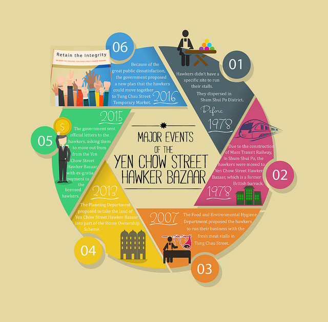

The Yen Chow Street Hawker Market
Standing in Sham Shui Po for more than 40 years,the Yen Chow Street Hawker Bazaar has fostered lots of art students, designers, and fabric lovers in Hong Kong. However, in 2013,the Hong Kong government planned to demolish the market, and take the land into part of the House Ownership Scheme.This has triggered a great public satisfaction in Hong Kong. What is happening to the market?
For whom who have never been to the Yen Chow Street Hawker Market, you can notice the market with a big nameplate placing at the entrance.
The Yen Chow Street Hawker Market is located next to the Sham Shui Po Police Station,with lots of fabric decorations on its periphery.
The above info graphic briefly illustrates the major events of the Yen Chow Street HawkerBazaar, including the plans of the government throughout the years.
The Yen Chow Street Hawker Market is covering in tarpaulins and striped canvas, with a vest array of clutter at the entrance.

The paths in the bazaar are narrow, with pilling textile shrouding of.
The market has fabrics in different colors, shapes and textures, and most of them are sold in yard.
The worse business environment inside the bazaar is one of the reasons urging the government to relocate the hawkers. During summer, the bazaar would be muggy and hot without a standard ventilation system.
Hawkers and people, who oppose the government reallocation plan, sewed their wishes and requests on the fabrics, and tied the fabrics around the market.
Some people wrote on the fabrics, wishing the market could be kept in original.
Looking inside the bazaar through the wire netting, there is two fabrics embroidering with the Chinese words “Respect the history of the hawker bazaar, and “Protect the livelihood of hawkers”.
The Chinese words in black and red colors expressed a strong desire of keeping the market in the original site.
People are requesting a better compensation and en masse reallocation plan within the Sham Shui Po District forthe hawkers.
The fabric was sewed onto the Chinese words “Fight to be a licensed fabric retailing market” in white color.